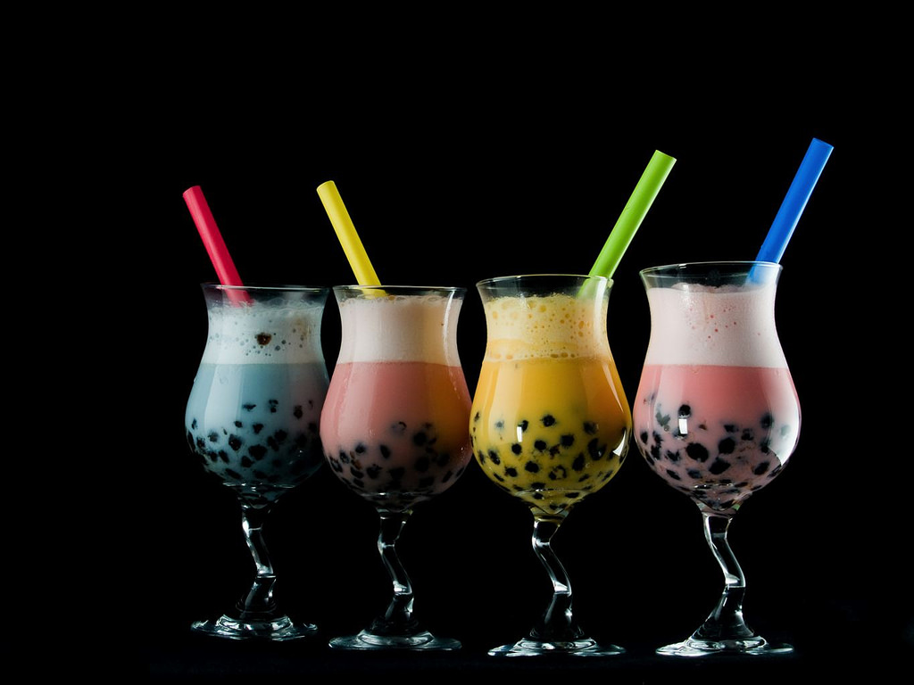
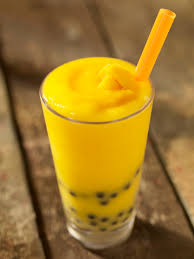

Four different flavors of Boba
This is a general example of Bubble tea. Comes in alcoholic and non-alcoholic.
A group of friends enjoying their favorite Boba drinks together
Enjoy Bubble Tea with your friends!
A Mango slush with tapioca
This is another example of Bubble tea made in a slush style.